Driveshaft Reassembly
Driveshaft ReassemblyDriveshaft:
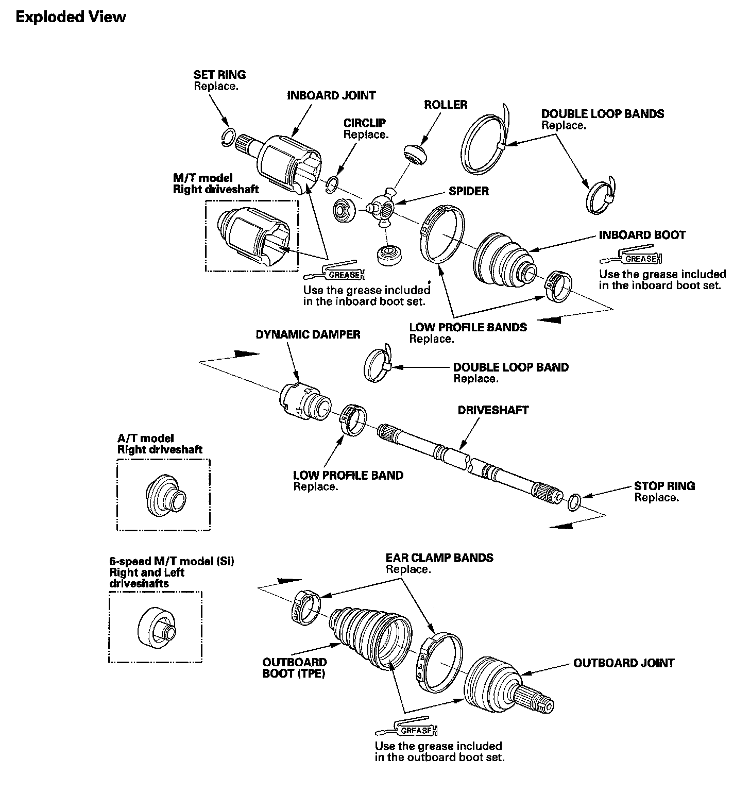
Special Tools Required
^ Boot band tool, KD-3191 or equivalent commercially available
^ Boot band pliers, Kent-Moore J-35910 or equivalent commercially available
NOTE: Refer to the Exploded View, as needed, during this procedure.
Inboard Joint Side
1. Wrap the splines with vinyl tape (A) to prevent damaging to the inboard boot.
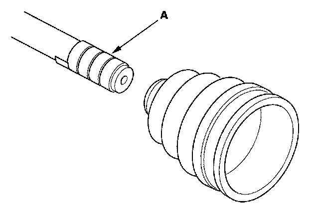
2. Install the inboard boot onto the driveshaft, then remove the vinyl tape. Be careful not to damage the inboard boot.
3. Install the spider (A) onto the driveshaft by aligning the marks (B) you made on the spider and the end of the driveshaft.
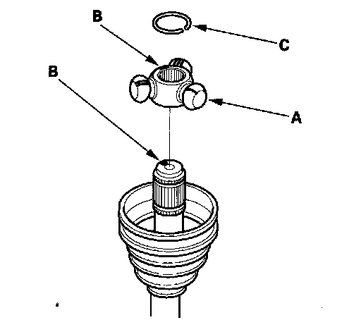
4. Fit the circlip (C) into the driveshaft groove. Always rotate the circlip in its groove to make sure it is fully seated.
5. Fit the rollers (A) onto the spider (B) with the high shoulders facing outward, and note these items:
^ Reinstall the rollers in their original positions on the spider by aligning the marks (C) you made.
^ Hold the driveshaft pointed up to prevent the rollers from falling off.
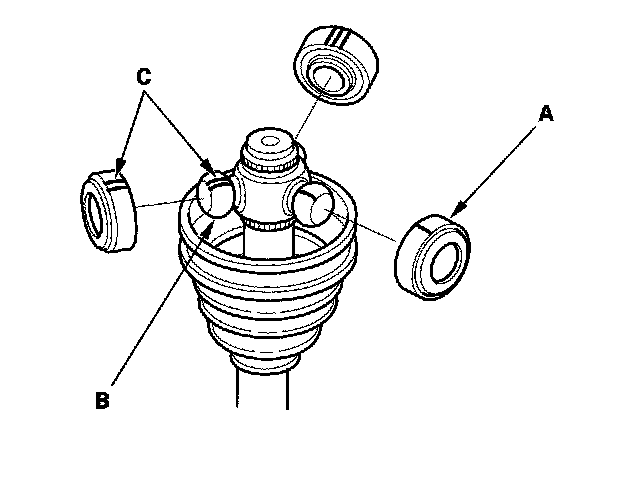
6. Pack the inboard joint with the joint grease included in the new in board boot set.
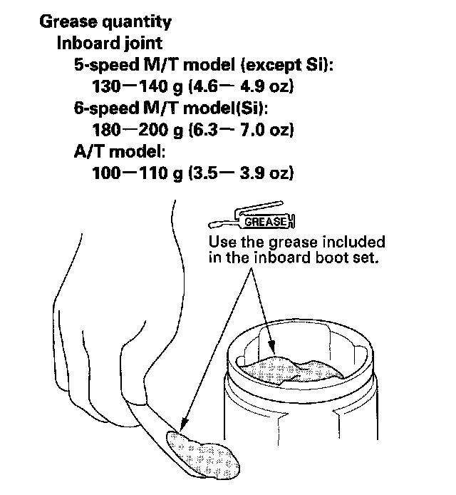
7. Fit the inboard joint onto the driveshaft and note these items:
^ Reinstall the inboard joint onto the driveshaft by aligning the marks (A) you made on the inboard joint and the rollers.
^ Hold the driveshaft so the inboard joint is pointing up to prevent it from failing off.
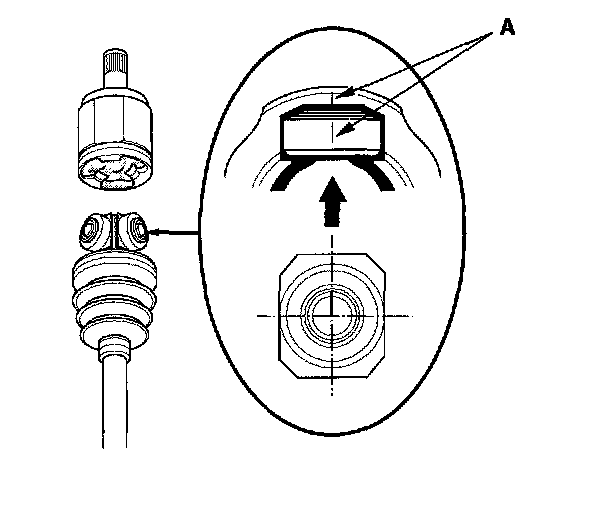
8. Fit the boot (A) ends onto the driveshaft (B) and the inboard joint (C).
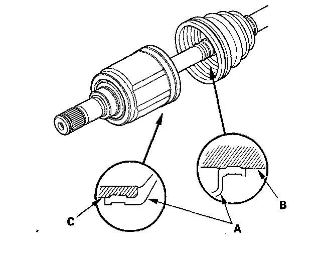
9. Adjust the length of the driveshaft to the figure that is on the chart, then adjust the boots to halfway between full compression and full extension.
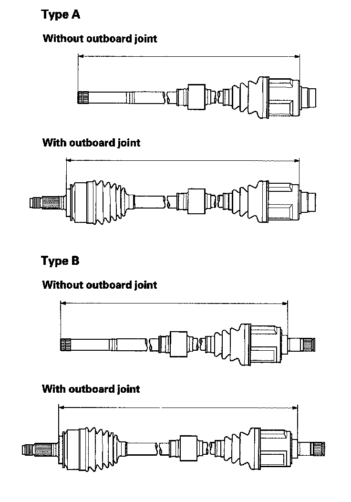
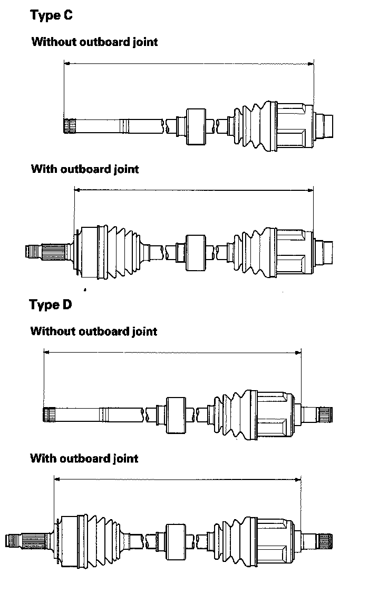
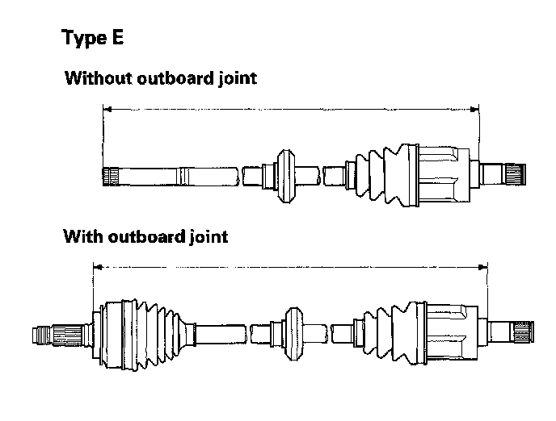
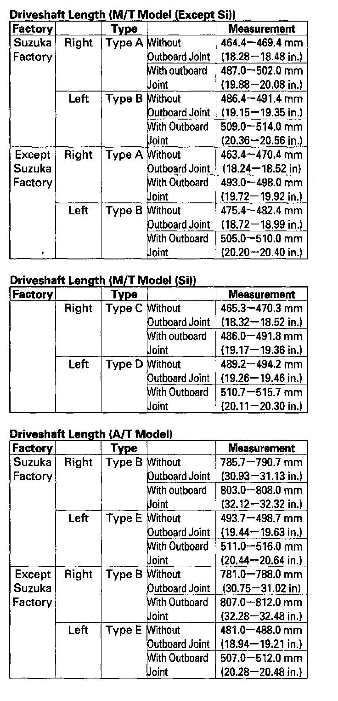
10. Install new boot bands.
^ For the low profile type, go to step 11.
^ For the double loop type, go to step 14. (Boot band replacement only)
11. Install the new low profile band (A) onto the boot (B), then hook the tab (C) of the band.
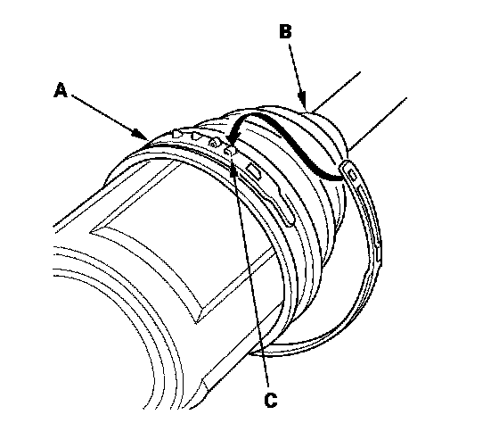
12. Close the hook portion of the band with a commercially available boot band pliers (A), then hook the tabs (B) of the band.
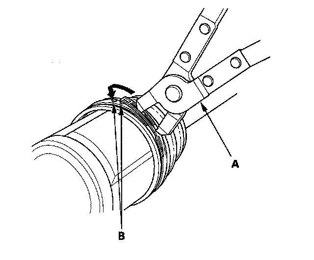
13. Install the boot band on the other end of the boot, and repeat steps 11 through 12.
14. Fit the boot ends onto the driveshaft and the inboard joint, then install the new double loop band (A) onto the boot (B).
NOTE: Pass the end of the new double loop band through the clip (C) twice in the direction of the forward rotation of the driveshaft.
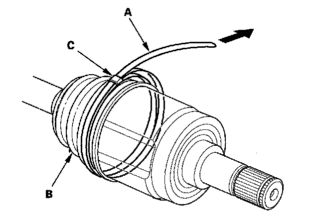
15. Pull up the slack in the band by hand.
16. Mark a position (A) on the band 10 - 14 mm (0.4 - 0.6 in.) from the clip (B).
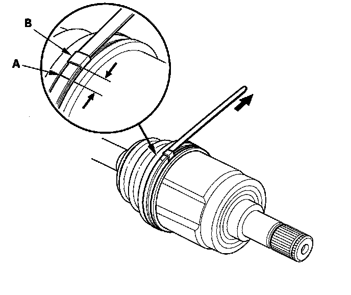
17. Thread the free end of the band through the nose section of the commercially available boot band tool (A), and into the slot on the winding mandrel (B).
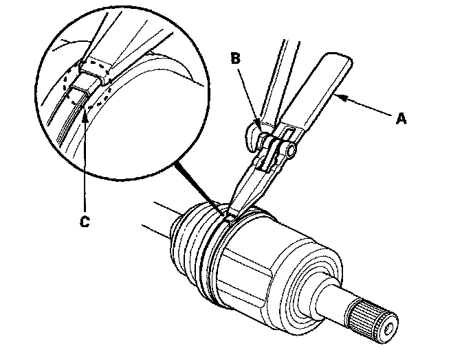
18. Using a wrench on the winding mandrel of the boot band tool, tighten the band until the marked spot (C) on the band meets the edge of the clip.
19. Lift up the boot band tool to bend the free end of the band 90° to the clip. Center-punch the clip, then fold over the remaining tail onto the clip.
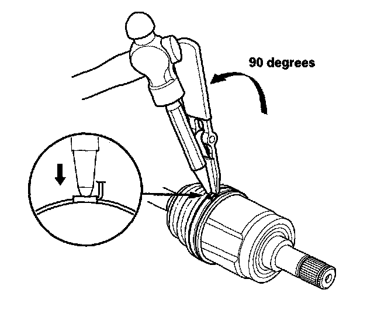
20. Unwind the boot band tool, and cut off the excess free end of the band to leave a 5 - 10 mm (0.2 - 0.4 in.) tail protruding from the clip.
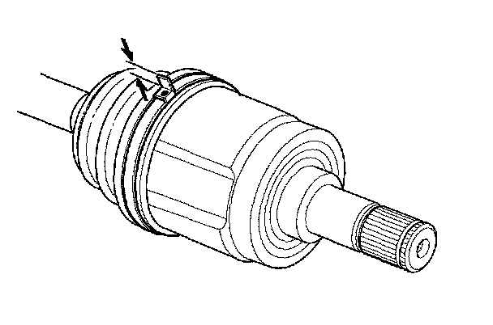
21. Bend the band end (A) by tapping it down with a hammer.
NOTE:
^ Make sure the band and clip do not interfere with anything on the vehicle and the band does not move.
^ Remove any grease remaining on the surrounding surfaces.
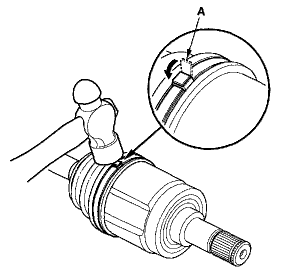
22. Repeat steps 14 through 21 for the band on the other end of the boot.
Outboard Joint Side
1. Wrap the splines with vinyl tape (A) to prevent damaging to the outboard boot.
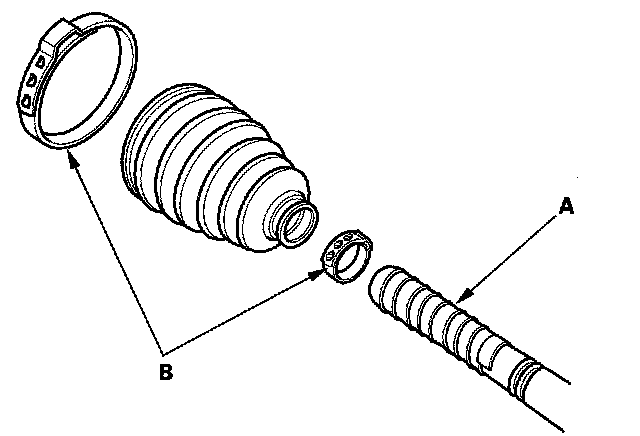
2. Install the new ear clamp bands (B) and outboard boot, then remove the vinyl tape. Be careful not to damage the outboard boot.
3. Install the new stop ring into the driveshaft groove (A).
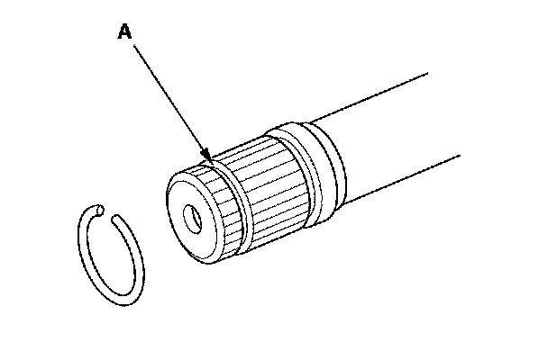
4. Pack about 35 g (1.2 oz) grease included in the new outboard boot set into the driveshaft hole in the outboard joint.
NOTE: If you are installing a new outboard joint, the grease is already installed.
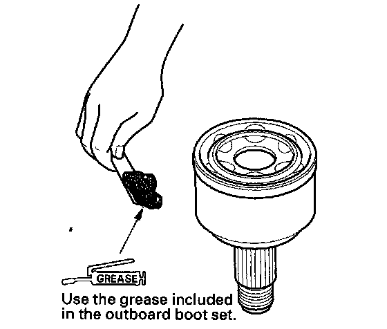
5. Insert the driveshaft (A) into the outboard joint (B) until the stop ring (C) is close to the joint.
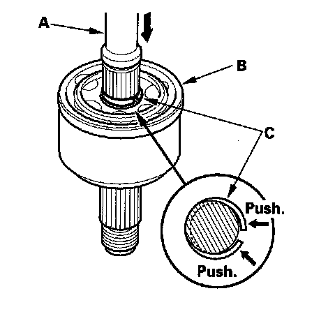
6. To completely seat the outboard joint, pick up the driveshaft and joint, and tap or hit them from a height of about 10 cm (4 in.) onto a hard surface.
NOTE: Do not use a hammer as excessive force may damage the driveshaft. Be careful not to damage the threaded section (A) of the outboard joint.
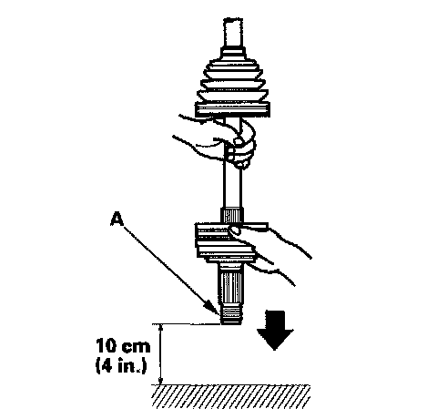
7. Check the alignment of the paint mark (A) you made with the outboard joint rim (B).
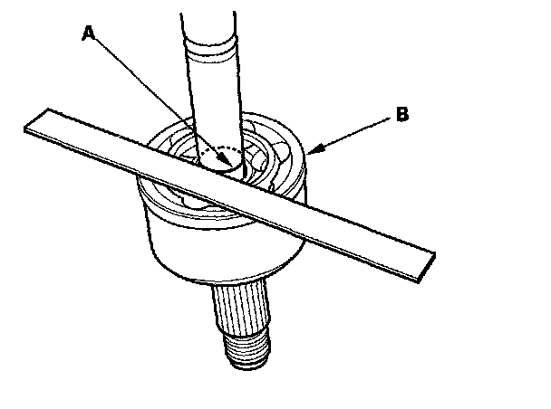
8. Pack the outboard joint (A) with the remaining grease included in the new outboard boot set.
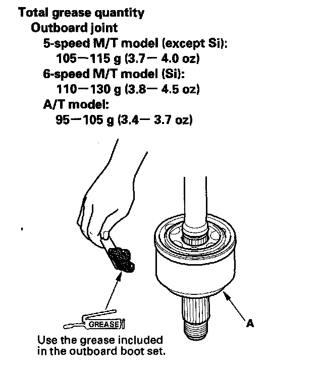
9. Fit the boot (A) ends onto the driveshaft (B) and outboard joint (C).
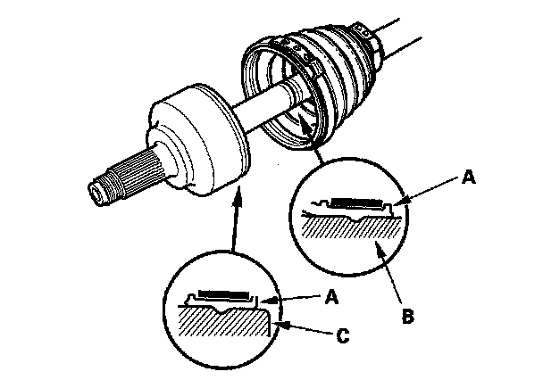
10. Close the ear portion (A) of the band with a commercially available boot band pliers (B).
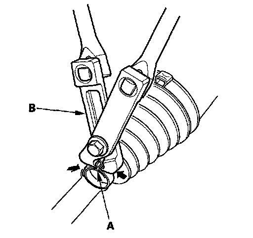
11. Check the clearance between the closed ear portion of the band. If the clearance is not within the standard, close the ear portion of the band tighter.
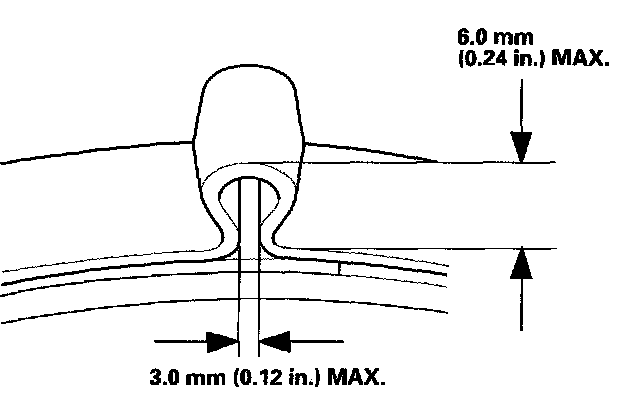
12. Repeat steps 10 and 11 for the band on the other end of the boot.